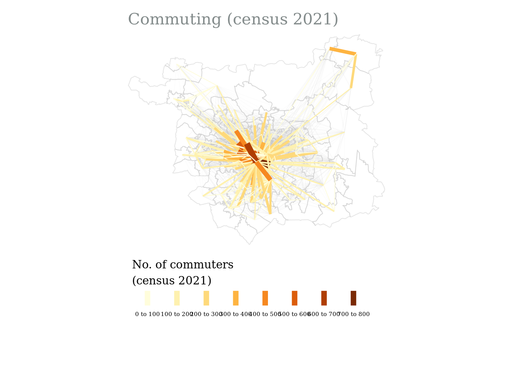
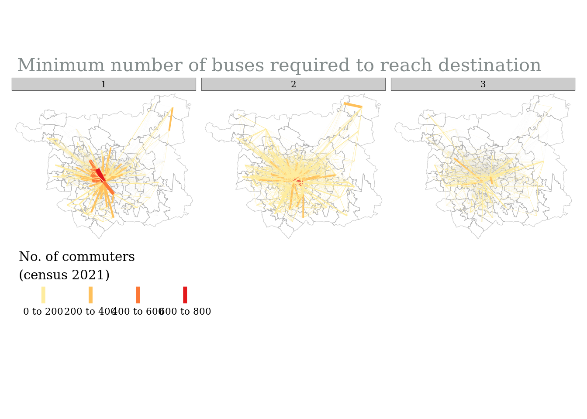
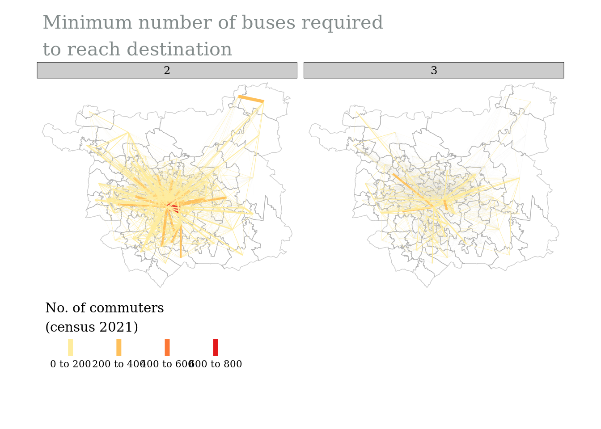
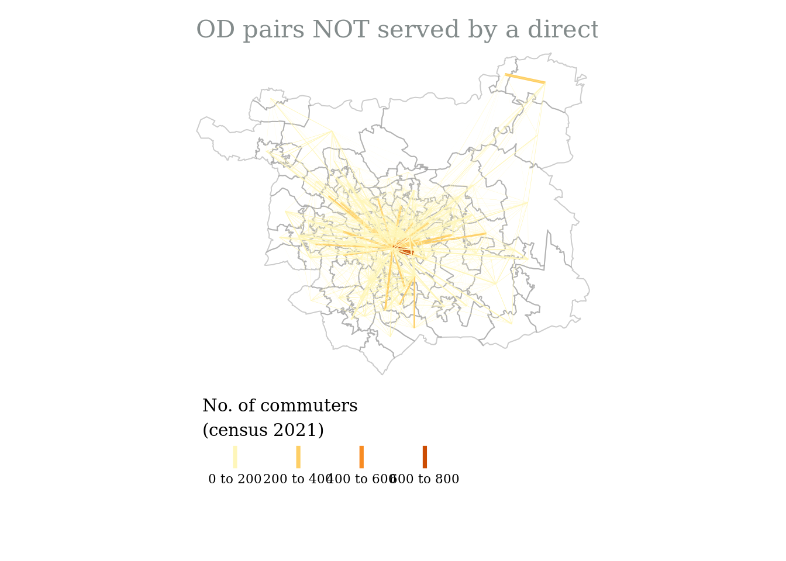
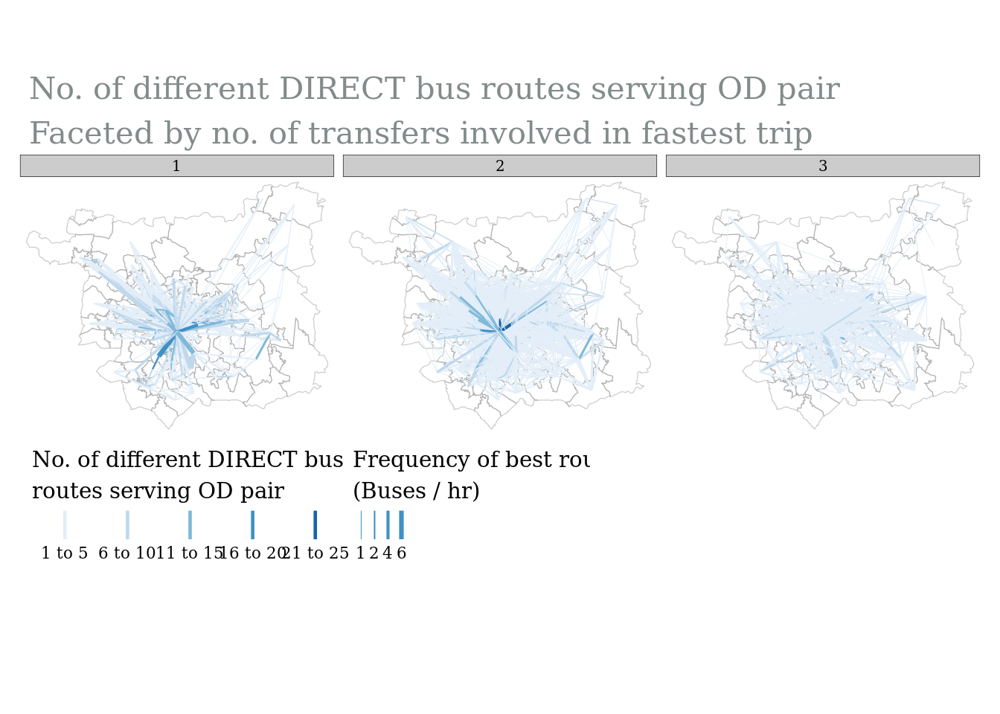
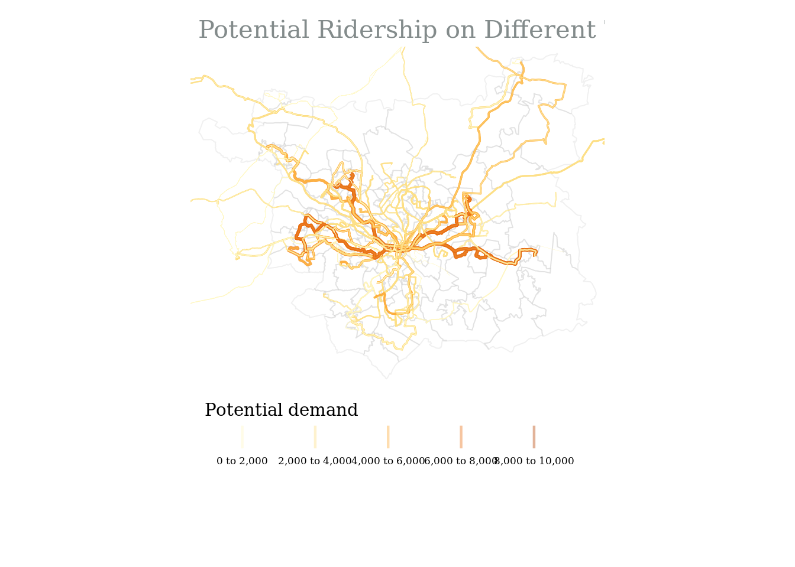

source("R/study_area_geographies.R")
source("R/filter_od_matrix.R")
library(tidyverse)
library(sf)
library(tmap)Demand on buses
Introduction
This code visualises the output from code/demand_on_buses.R . The datasets we want to explore together are:
demographic data
travel time data
number of destinations reachable
accessibility to different services
travel demand data
census
od demand matrix
demand aggregated onto buses
activity-based model
od demand matrix
demand aggregated onto buses
# -------------------- read in the outputs
# --- decide on geographic resolution
geography <- "MSOA"
# read in geography
study_area <- st_read("data/interim/study_area_boundary.geojson")Reading layer `study_area_boundary' from data source
`/home/hussein/Documents/GitHub/drt-potential/data/interim/study_area_boundary.geojson'
using driver `GeoJSON'
Simple feature collection with 2607 features and 15 fields
Geometry type: MULTIPOLYGON
Dimension: XY
Bounding box: xmin: -1.800359 ymin: 53.69898 xmax: -1.290394 ymax: 53.94587
Geodetic CRS: WGS 84# convert to necessary resolution
study_area <- study_area_geographies(study_area = study_area,
geography = geography)
study_area <- study_area %>%
st_cast("MULTIPOLYGON")Loading in travel time and travel demand data
# --- travel time and demand (ttd) matrix
ttd_matrix <- arrow::read_parquet(paste0("data/raw/travel_demand/od_census_2021/demand_study_area_", tolower(geography), ".parquet"))
# TODO: move this line of code to script that creates n_rides (probably routing_r5r or r5r_routing_wrappers (where rows are summarised))
ttd_matrix <- ttd_matrix %>%
mutate(n_rides = round(n_rides))
from_id_col = paste0(geography, "21CD_home")
to_id_col = paste0(geography, "21CD_work")
# -------------------- Analysis
# Get median values per origin
ttd_matrix_o <- ttd_matrix %>%
group_by(across(from_id_col), combination, departure_time) %>%
summarise(across(c(contains("_time"), n_rides), median, na.rm = TRUE),
# number of destinations that can be reached
reachable_destinations = n(),
# TODO: number of destinations that can be reached directly
# reachable_destinations_direct = count(n_rides == 1),
commute_all = sum(commute_all)) %>%
ungroup() %>%
mutate(n_rides = round(n_rides))
# Get median values per destination
ttd_matrix_d <- ttd_matrix %>%
group_by(across(to_id_col), combination, departure_time) %>%
summarise(across(c(contains("_time"), n_rides), median, na.rm = TRUE),
# number of origins that can reach the destination
reachable_origins = n()) %>%
ungroup() %>%
mutate(n_rides = round(n_rides))Loading in bus coverage of travel demand
# --- data on which OD pairs are covered by direct buses
od_supply <- arrow::read_parquet(paste0("data/interim/travel_demand/", toupper(geography), "/od_pairs_bus_coverage.parquet"))
# get number of unique trips (directional routes) that serve each OD pair, and their headway
od_supply_avg <- od_supply %>%
group_by(Origin, Destination, start_time) %>%
summarise(number_of_trips = n(),
headway_sec_avg = round(mean(headway_secs)),
headway_sec_min = min(headway_secs),
bus_per_hr_avg = round(3600/headway_sec_avg),
bus_per_hr_min = round(3600/headway_sec_min)) %>%
ungroup()
# filter od pairs by euclidian distance
od_supply_filtered = filter_matrix_by_distance(zones = study_area,
od_matrix = od_supply_avg,
dist_threshold = 1000)
# combine ttd matrix with matrix showing bus provision for ODs
od_sd <- od_supply_filtered %>%
#TODO: check if we need an inner join (we only have 1 start time atm)
left_join(ttd_matrix,
by = c("Origin" = from_id_col,
"Destination" = to_id_col,
"start_time" = "departure_time"))Loading in travel demand aggregated onto bus routes
trips_sd_sf <- st_read(paste0("data/processed/travel_demand/trips_potential_demand_census_", geography, ".geojson"))Reading layer `trips_potential_demand_census_MSOA' from data source
`/home/hussein/Documents/GitHub/drt-potential/data/processed/travel_demand/trips_potential_demand_census_MSOA.geojson'
using driver `GeoJSON'
Simple feature collection with 1443 features and 7 fields (with 418 geometries empty)
Geometry type: LINESTRING
Dimension: XY
Bounding box: xmin: -2.090494 ymin: 53.72063 xmax: -0.4052888 ymax: 54.29559
Geodetic CRS: WGS 84# If we want to get the total demand per day let's try and group by shape_id (same trip at different time has a different trip_id)
trips_sd_sf_shape_sum <- trips_sd_sf %>%
group_by(shape_id) %>%
summarise(potential_demand = sum(potential_demand, na.rm = TRUE)) %>%
ungroup()Plots
Preprocessing
# ---------- get desire lines
od_sd_sf <- od::od_to_sf(x = od_sd %>% st_drop_geometry(),
z = study_area %>% st_cast("MULTIPOLYGON"),
crs = 4326)
# ---------- create factor column for demand (for facet plots)
od_sd_sf <- od_sd_sf %>%
mutate(commute_all_fct = cut_interval(commute_all, n = 3),
bus_per_hr_min_fct = cut_interval(bus_per_hr_min, n = 3))
# ----------- prep the layer
# TODO: remove this when we have multiple start times (currently the od_supply df only has 7:30 - WHY? )
od_sd_sf <- od_sd_sf %>%
filter(combination == "pt_wkday_morning")MAP 1: OD pairs with the highest level of commuting
tm_shape(study_area) +
tm_borders(col = "grey80",
alpha = 0.5) +
tm_shape(od_sd_sf) +
tm_lines(col = "grey80",
alpha = 0.05) +
tm_shape(od_sd_sf %>%
filter(commute_all > quantile(commute_all, probs = 0.90, na.rm = TRUE))) +
tm_lines(col = "commute_all",
title.col = "No. of commuters \n(census 2021)",
lwd = "commute_all",
legend.lwd.show = FALSE,
legend.col.is.portrait = FALSE,
scale = 10) +
tm_layout(fontfamily = 'Georgia',
main.title = "Commuting (census 2021)", # this works if you need it
main.title.size = 1.3,
main.title.color = "azure4",
main.title.position = "left",
legend.outside = TRUE,
legend.outside.position = "bottom",
frame = FALSE)
MAP 2: OD pairs by number of buses (transfers) required to connect them
tm_shape(study_area) +
tm_borders(col = "grey60",
alpha = 0.5) +
tm_shape(od_sd_sf) +
tm_lines(col = "grey80",
alpha = 0.02) +
tm_shape(od_sd_sf) +
tm_lines(col = "commute_all",
title.col = "No. of commuters \n(census 2021)",
lwd = "commute_all",
legend.lwd.show = FALSE,
legend.col.is.portrait = FALSE,
palette = "YlOrRd",
scale = 10) +
tm_facets(by = "n_rides",
free.coords = FALSE,
nrow = 1) + # so that the maps aren't different sizes
tm_layout(fontfamily = 'Georgia',
main.title = "Minimum number of buses required to reach destination", # this works if you need it
main.title.size = 1.3,
main.title.color = "azure4",
main.title.position = "left",
legend.outside = TRUE,
legend.outside.position = "bottom",
frame = FALSE) 
MAP 3: OD pairs NOT served by a direct bus
tm_shape(study_area) +
tm_borders(col = "grey60",
alpha = 0.5) +
tm_shape(od_sd_sf %>%
filter(n_rides > 1)) +
tm_lines(col = "commute_all",
lwd = "commute_all",
title.col = "No. of commuters \n(census 2021)",
legend.lwd.show = FALSE,
legend.col.is.portrait = FALSE,
scale = 5) +
tm_layout(fontfamily = 'Georgia',
main.title = "OD pairs NOT served by a direct bus",
main.title.size = 1.3,
main.title.color = "azure4",
main.title.position = "left",
legend.outside = TRUE,
legend.outside.position = "bottom",
frame = FALSE)
MAP 4: No. of direct bus reoutes serving OD pair (faceted) by no. of commuters
tm_shape(study_area) +
tm_borders(col = "grey60",
alpha = 0.5) +
tm_shape(od_sd_sf) +
tm_lines(col = "grey90",
alpha = 0.5) +
tm_shape(od_sd_sf) +
tm_lines(col = "number_of_trips",
lwd = "bus_per_hr_min",
title.col = "No. of different DIRECT bus \nroutes serving OD pair",
title.lwd = "Frequency of best route\n(Buses / hr)",
legend.col.is.portrait = FALSE,
palette = "Blues",
scale = 5) +
tm_facets(by = "commute_all_fct",
free.coords = FALSE,
nrow = 1) +
tm_layout(fontfamily = 'Georgia',
main.title = "No. of different DIRECT bus routes serving OD pair\nFaceted by no. of commuters",
main.title.size = 1.3,
main.title.color = "azure4",
main.title.position = "left",
legend.outside = TRUE,
legend.outside.position = "bottom",
legend.stack = "horizontal",
frame = FALSE)
MAP 5: Fastest vs direct routes
tm_shape(study_area) +
tm_borders(col = "grey60",
alpha = 0.5) +
tm_shape(od_sd_sf) +
tm_lines(col = "number_of_trips",
lwd = "bus_per_hr_min",
title.col = "No. of different DIRECT bus \nroutes serving OD pair",
title.lwd = "Frequency of best route\n(Buses / hr)",
legend.col.is.portrait = FALSE,
palette = "Blues",
scale = 5) +
tm_facets(by = "n_rides",
free.coords = FALSE,
nrow = 1) +
tm_layout(fontfamily = 'Georgia',
main.title = "No. of different DIRECT bus routes serving OD pair\nFaceted by no. of transfers involved in fastest trip",
main.title.size = 1.3,
main.title.color = "azure4",
main.title.position = "left",
legend.outside = TRUE,
legend.outside.position = "bottom",
legend.stack = "horizontal",
frame = FALSE) 
MAP 6: Demand Aggregated onto bus routes
tm_shape(study_area) +
tm_borders(alpha = 0.1) +
tm_shape(trips_sd_sf %>%
filter(start_time == "07:30:00")) +
tm_lines(col = "potential_demand",
lwd = "potential_demand",
title.col = "Potential demand",
legend.lwd.show = FALSE,
legend.col.is.portrait = FALSE,
scale = 3,
legend.is.portrait = FALSE,
alpha = 0.4) +
tm_layout(fontfamily = 'Georgia',
main.title = "Potential Ridership on Different Trips", # this works if you need it
main.title.size = 1.3,
main.title.color = "azure4",
main.title.position = "left",
legend.outside = TRUE,
legend.outside.position = "bottom",
frame = FALSE)
map 1:
background: All OD pairs
foreground: od pairs served by direct bus
- color = travel demand on OD pair
map 2:
background: all OD pairs
foreground: OD pairs with high demand
color: served by direct bus (YES / NO)
color: served by direct bus (color gradient = bus frequency)